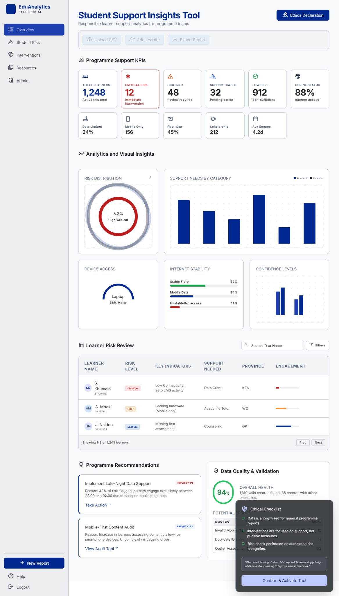
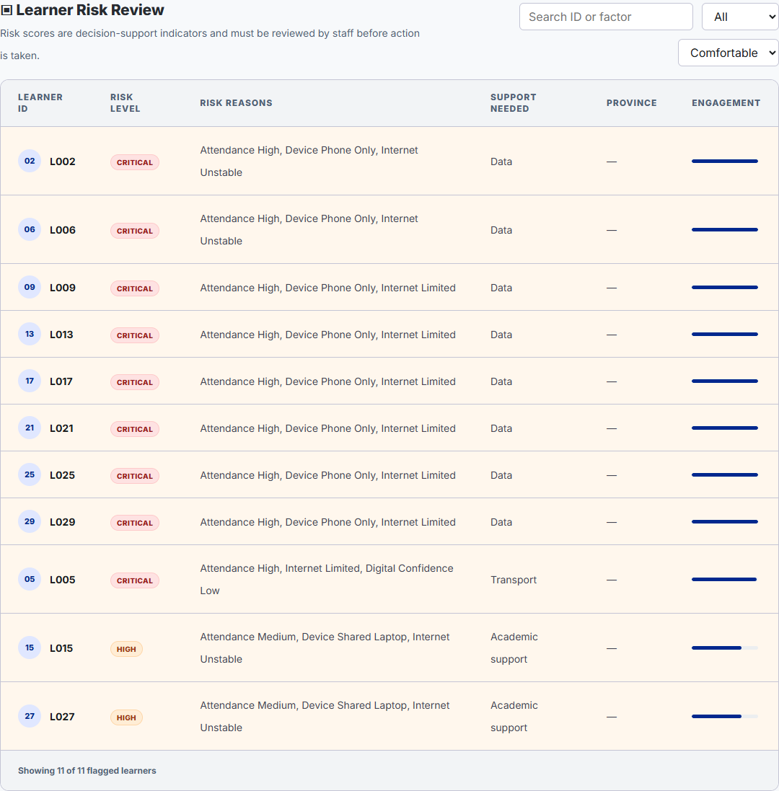
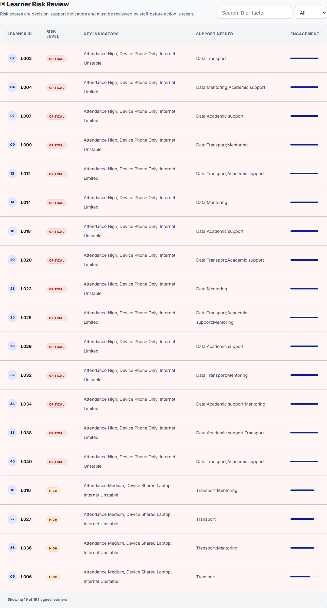
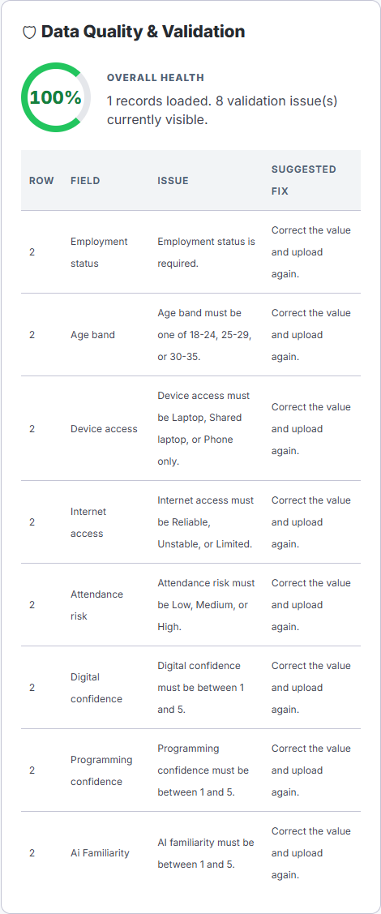
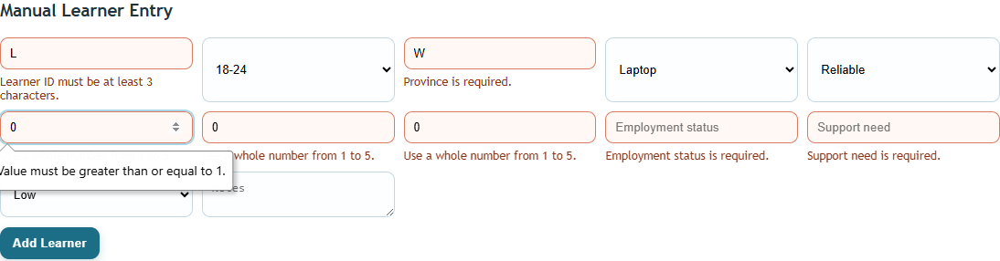
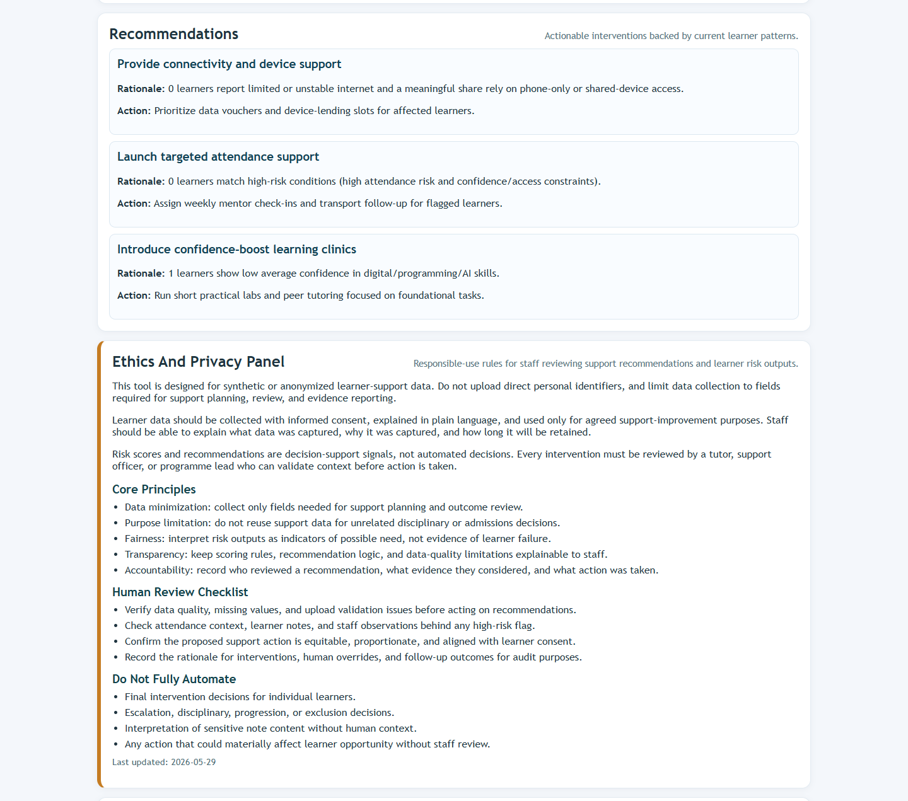
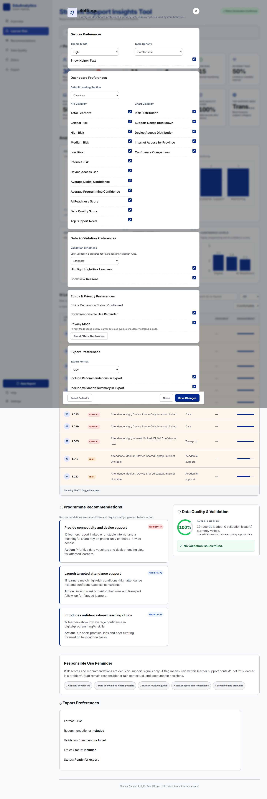
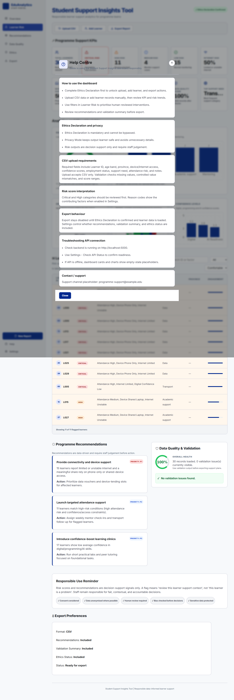
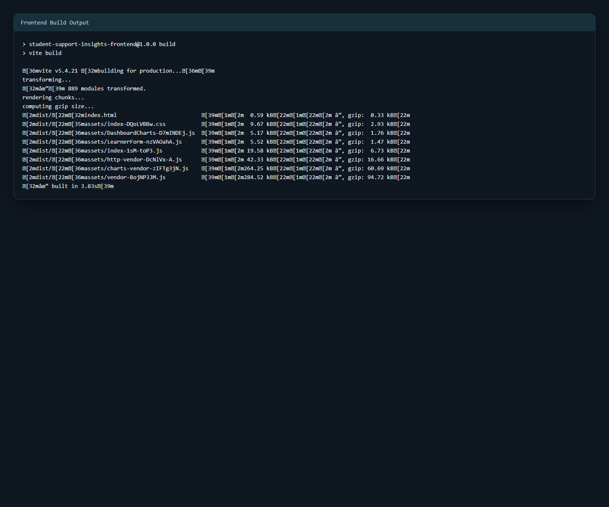
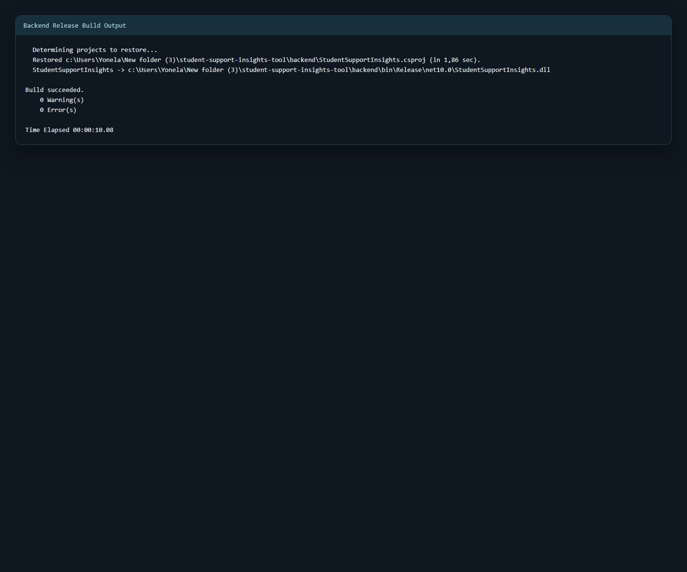

This submission presents the completed Student Support Insights Tool prototype. The final system helps programme teams upload or capture learner support data, validate it, view dashboard trends, identify learners who may need earlier support, and generate practical recommendations for human-reviewed intervention planning. Synthetic data was used throughout to reduce privacy risk while still demonstrating realistic system behavior.
The final version also includes settings-driven display preferences, ethics confirmation before sensitive actions, confirmation on every data upload, confirmation before clearing report state, and refreshed screenshot and build evidence for submission review.
Digital skills programmes often collect useful learner information, but the data is not always analyzed early enough or consistently enough to support timely intervention. This can delay support and reduce consistency in staff decision-making. This project addresses the following core question:
How can a programme team use learner data responsibly to identify support needs, prioritize support actions, and improve learner success?
Primary stakeholders include learners, programme staff, leadership, IT support, and mentors. Learners require timely and fair support. Staff require clear evidence for prioritization. Leadership requires performance visibility for planning and resource allocation. Supporting models:
The as-is process is mostly manual and depends on spreadsheet review. The to-be process is more organized: capture or upload learner data, validate it, generate dashboard analytics, flag possible support risk, produce recommendations, and let staff review the result before taking action.
Dataset: 30 synthetic learner records with fields for access, confidence, support need, and attendance risk. Data quality controls implemented:
Supporting evidence:
The final prototype exceeds the minimum visualization requirement with five implemented charts:
Key findings include concentration of high-risk learners, internet and device constraints, uneven confidence across digital capability areas, and recurring support needs that can be prioritized for intervention planning.
Implemented features:
Technical implementation:
The ethics section was strengthened because the tool works with learner support indicators such as access, confidence, attendance risk and support needs. Even without names, this information can influence how learners are understood by staff, so the prototype treats it as confidential support information.
The prototype follows these responsible-use principles:
Final interface controls also reinforce this approach:
The ethics review also includes a privacy notice, consent guidance, human-review workflow, data retention recommendation, bias risks, security recommendations and a governance checklist.
Delivery followed a staged 15-day plan with iterative build-test-refine cycles and structured evidence capture. Later work focused on reliability hardening, settings architecture, UX refinements, and final QA evidence.
Testing was completed across API behavior, validation paths, dashboard contract integrity, interaction flows, and frontend/backend build quality. Bugs were tracked and resolved with evidence for import parsing, risk explainability, upload feedback, modal behavior, and health-check handling.
Final QA confirmed:
This project helped me see that a dashboard is only useful if the data behind it is clean and the meaning of the numbers is clear. I also realized that risk scoring can be sensitive, so I kept the score explainable and included human review instead of presenting it as an automatic decision. A real version of this tool would still need review by programme staff and testing with properly anonymized data before being used operationally.
A major challenge was balancing the working prototype with all the evidence required by the assignment. Earlier versions were too focused on the dashboard and not enough on evidence mapping, testing, responsible-use wording, and reliability. I improved this by building around the assignment essentials first, then strengthening validation, ethics controls, settings behavior, screenshots, and final evidence traceability.
See docs/FinalReport/evidence_inventory_sfia.md.
Evidence is packaged in the following order for submission review:
High-fidelity redesign reference used to guide the academic look-and-feel and information hierarchy.

Clean dashboard screenshot prepared for report readability, showing data input, KPI area, and visual insight cards.
Shows the staff review table with risk level, reason indicators, support category, and engagement bars.

Shows the searchable high-risk table with score, priority, and detailed factor chips for human-reviewed follow-up.

Shows the row-level validation panel produced when invalid CSV values are uploaded.

Shows inline field-level validation on the manual learner entry form.

Shows recommendations alongside ethics and privacy guidance to support accountable staff decisions.

Shows dashboard preference controls for layout, chart visibility, privacy mode, and export behavior.

Shows embedded guidance for onboarding staff, ethical use, CSV requirements, and troubleshooting.

Successful frontend production build output captured for submission evidence.

Successful backend Release build output captured for submission evidence.
